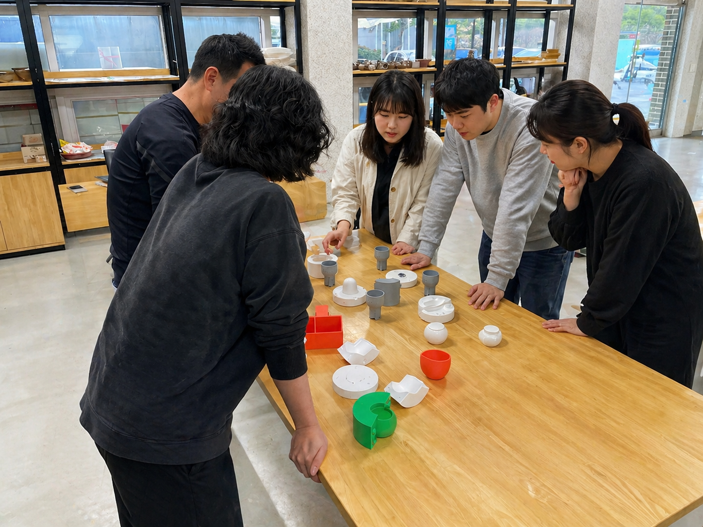
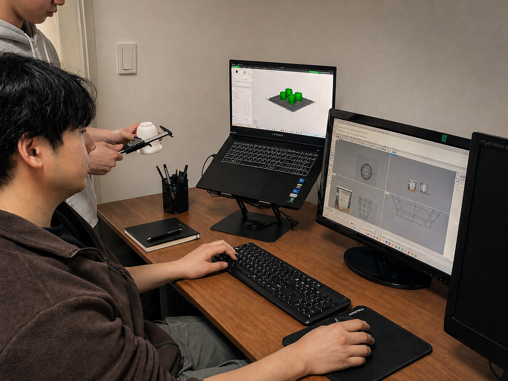
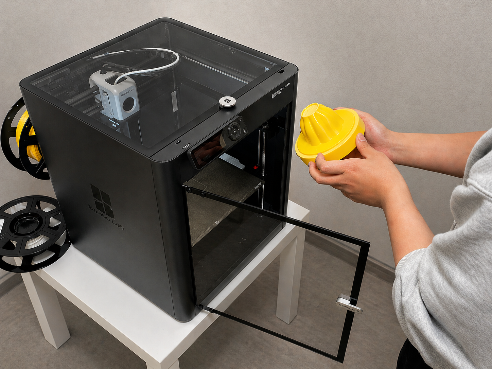
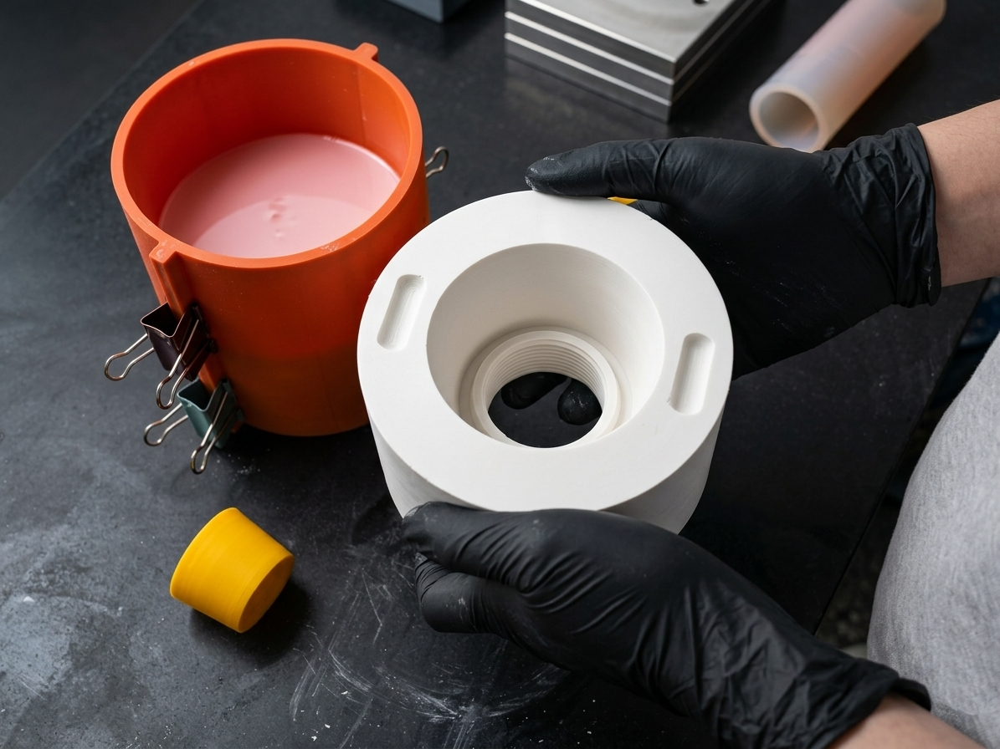
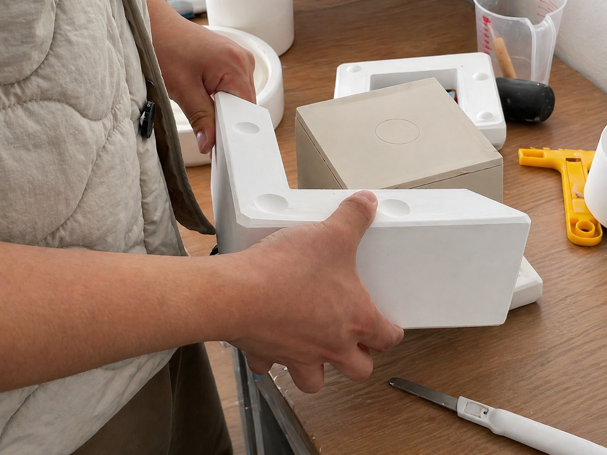

01
회사 개요
어울림은 도자기 석고틀 설계와 제작을 중심으로 운영되는 스튜디오입니다. 의뢰에 맞춘 형태와 사이즈를 제안하고, 소량 제작부터 반복 납품까지 공정과 기준을 바탕으로 작업합니다.
- 회사명어울림 / EOULRIM
- 분야도자기 · 석고틀 제작
- 주요 공정3D 모델링 · FDM 마스터 패턴 · 석고틀
- 운영 형태스튜디오
02
업무 영역
도자기 제작의 시작점인 석고틀을 중심으로 작업합니다. 3D 모델링으로 정밀한 원형을 설계하고, FDM 프린팅으로 마스터 패턴을 제작합니다. 전통 석고 기술과 디지털 공정을 결합해 결과물의 정확도를 유지합니다.
-
석고틀 설계 및 제작
의뢰 형태에 맞는 원형 설계와 석고틀 제작을 담당합니다.
-
샘플 도자기 제작
본 제작 전 형태와 사이즈를 검증하기 위한 샘플 작업을 진행합니다.
-
공간 · 브랜드 맞춤 제작
매장 · 브랜드 콘셉트에 맞춘 소량 또는 반복 제작을 진행합니다.
-
3D 모델링 · 원형 제작
정밀한 디지털 원형 설계와 FDM 프린팅 기반 마스터 패턴 작업을 진행합니다.
03
작업 프로세스
시안 접수부터 테스트 · 납품까지 다섯 단계로 운영합니다. 각 단계에서 고객 확인을 거치며 형태와 품질을 함께 점검합니다.
-

STEP 01 · BRIEFING STEP 01
시안 접수
고객으로부터 시안을 전달받아 작업을 시작합니다. 형태 · 사이즈 · 사용 환경을 함께 확인하며 제작 방향을 정리합니다.
-

STEP 02 · 3D MODELING STEP 02
3D 모델링 및 1차 확인
시안을 기반으로 3D 모델링을 진행한 후, 고객 확인을 통해 수정 및 보완 과정을 거쳐 형태를 확정합니다.
-

STEP 03 · PRINTING STEP 03
출력 진행
최종 시안이 확정되면 제품 출력 작업을 진행합니다. 석고 몰드 제작을 원하실 경우 다음 단계로 이어집니다.
-

STEP 04 · MOLDING STEP 04
몰드 제작
요청 시 석고 몰드 제작 공정을 진행합니다. 분할 · 두께 · 탈형 방식까지 사용 환경에 맞춰 설계합니다.
-

STEP 05 · QC & DELIVERY STEP 05
테스트 및 납품
몰드 제작 후 실제 테스트를 거쳐 품질을 확인하고, 안전하게 포장하여 고객에게 전달합니다.
04
작업 원칙
-
형태의 완성도
오래 사용할 수 있는 형태와 비례를 우선합니다.
-
재현성
소량 제작과 반복 납품에서 동일한 품질을 유지합니다.
-
공정의 정확성
기획 의도에 맞는 결과를 위해 기본 공정을 점검합니다.
05
문의 안내
회사 · 매장 · 브랜드에 맞는 제작 문의는 채널톡으로 접수해 주시면 영업일 기준 2 ~ 3일 이내 회신드립니다. 아래 문의 접수 버튼을 누르시거나 우측 하단 채널톡으로 문의해 주세요.
- 접수 채널채널톡 (채팅 상담)
- 회신영업일 2 ~ 3일 이내
- 제출 자료레퍼런스 / 사이즈 / 수량 / 사용 환경